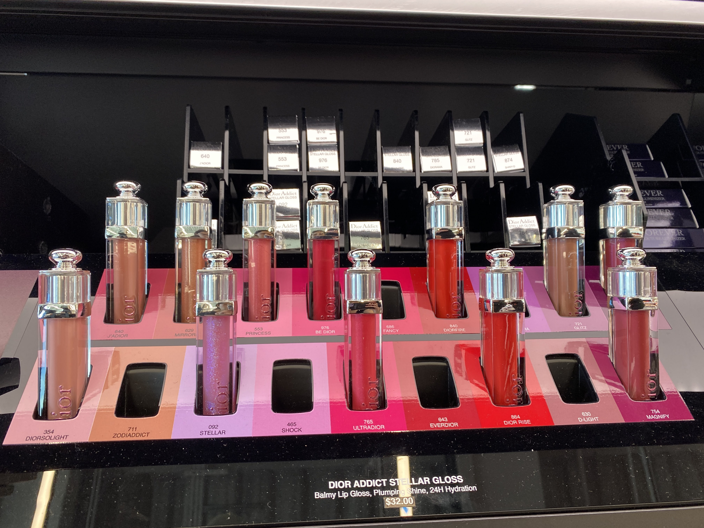

Here is my makeup Routine!
- Make sure to wash, and moisturize first!
- Get your favorite primer and make sure it meets your specific skin needs of your skin type.
- Add concealer and color corrector on dark spots or blemishes
- Get your foundation, I find a brush and a spatula to have the best results.
- for very dry skin use chanel foundations because they are water based and have hydrayting ingredients
- for combination skin I recoment the hous labs foundation
- a great longlasting an natural looking foundation is the Dior line
- Use a contour or bronzing product to add color and define the face
- Next I do my eyes
- Add a blush and highlight that matches the undertones of the eyeshadow
- If desired add powder with a puff to make the makeup last longer
- Add maskara and let it dry
- Shape and define brows
- Add a generous ammount of setting spray
- Add your favorite lip product
- Finish!
